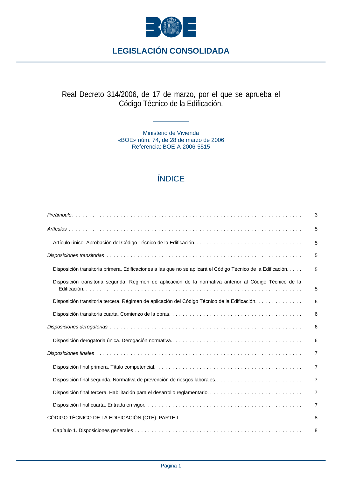

RD-314-2006 · Fragmento de PDF p1 · versión 2022-06-15 · capa oficial
Formatos: JSON compacto · Markdown · PDF fuente
Ámbito del documento · texto del ámbito · documento y tablas
ID técnico a0002 · PDF pág. 1-2 · jerarquía no validada por persona · no es capítulo: sin_linea_de_encabezado · padre: raíz · literal original en el contenido: «Disposición transitoria segunda. Régimen de aplicación de la normativa anterior al Código Técnico de la Edificación................................................................»
Disposición transitoria segunda. Régimen de aplicación de la normativa anterior al Código Técnico de la Edificación................................................................ Edificación................................................................ 5 Disposición transitoria tercera. Régimen de aplicación del Código Técnico de la Edificación.............. 6 Disposición transitoria cuarta. Comienzo de la obras....................................... 6 Disposiciones derogatorias........................................................ 6 Disposición derogatoria única. Derogación normativa....................................... 6 Disposiciones finales............................................................ 7 Disposición final primera. Título competencial........................................... 7 Disposición final segunda. Normativa de prevención de riesgos laborales.......................... 7 Disposición final tercera. Habilitación para el desarrollo reglamentario. ........................... 7 Disposición final cuarta. Entrada en vigor.............................................. 7 CÓDIGO TÉCNICO DE LA EDIFICACIÓN (CTE). PARTE I .................................... 8 Capítulo 1. Disposiciones generales ................................................. 8 LEGISLACIÓN CONSOLIDADA Página 1 Artículo 1. Objeto. ........................................................... 8 Artículo 2. Ámbito de aplicación................................................... 8 Artículo 3. Contenido del CTE. ................................................... 9 Artículo 4. Documentos Reconocidos y Registro General del CTE. ............................ 9 Capítulo 2. Condiciones técnicas y administrativas........................................ 10 Artículo 5. Condiciones generales para el cumplimiento del CTE. ............................. 10 Artículo 6. Condiciones del proyecto................................................ 11 Artículo 7. Condiciones en la ejecución de las obras...................................... 12 Artículo 8. Condiciones del edificio. ................................................ 14 Capítulo 3. Exigencias básicas.................................................... 14 Artículo 9. Generalidades....................................................... 14 Artículo 10. Exigencias básicas de seguridad estructural (SE)................................ 15 Artículo 11. Exigencias básicas de seguridad en caso de incendio (SI).......................... 15 Artículo 12. Exigencias básicas de seguridad de utilización y accesibilidad (SUA)................... 16 Artículo 13. Exigencias básicas de salubridad (HS) «Higiene, salud y protección del medio ambiente»...... 17 Artículo 14. Exigencias básicas de protección frente al ruido (HR). ............................ 18 Artículo 15. Exigencias básicas de ahorro de energía (HE)................................. 18 ANEJO I. Contenido del proyecto................................................... 19 ANEJO II. Documentación del seguimiento de la obra...................................... 21 ANEJO III. Terminología........................................................ 22 CÓDIGO TÉCNICO DE LA EDIFICACIÓN (CTE). PARTE II................................... 26 BOLETÍN OFICIAL DEL ESTADO LEGISLACIÓN CONSOLIDADA Página 2

PDF fuente redistribuible: copia fiel enlazada en esta página (SHA256 verificado).